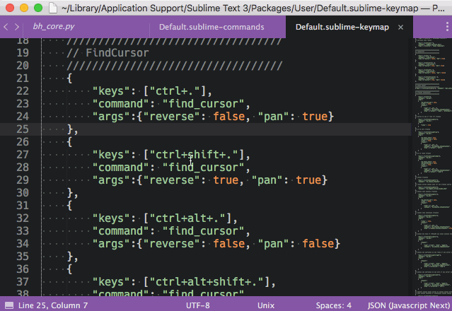

User Guide
Getting Started
Find cursor provides only one command, and that command makes the cursors highly visible. It works best when bound to a shortcut. Simply setup a keymap and you are ready to go. Though if you prefer, you can add commands in the command palette, or menus.
By default, FindCursor defines two commands in the command palette: Find Cursor and Find Cursor (Reverse). Both of the default command palette commands employ panning mode as discussed in the command section of the documentation. Panning mode is used as it is better suited to the command palette, while iterative is better suited for keymaps (the recommended way to use FindCursor).
Command
find_cursor-
When the command is first invoked, all cursors will turn to block cursors and blink making them highly visible. Subsequent invocations (if performed before timeout – i.e. while the cursors are still highlighted) will cycle through the cursors in the view. The focus modes are iterative mode (the default) and pan mode.
-
Iterative Mode: Iterative mode is the default. This will cycle through each cursor centering it in the view. Iteration only occurs when the command is ran an additional time while the cursors are still in their highlighted state. If run after they have reverted to their original state, FindCursor will just show the next off screen cursor. For this reason, iterative mode doesn't work too well from the command palette as the command is slow to activate from the command line; iterative mode is not provided by default in the command palette for the these reasons.
-
Pan Mode: Pan mode, or panning mode, will pan through the cursors in your view. While iterative mode will focus each cursor individually while the in the high visibility state, pan mode will just jump to the next group of offscreen cursors.
Parameters Type Description reverseboolean Controls the direction of cursor focusing when either iterating or panning through cursors. panboolean Controls whether the command will run in pan mode or iterative mode. Screencast demonstrating the differences of pan vs iterative:

-
Defining Keymaps
Setting up commands is basically the same for either pan or iterative commands. The command can be bound in a forward or reverse direction and in iterative or pan mode. It is usually useful to bind both forward and reverse variants for easier cursor navigation.
////////////////////////////////// // Find Cursor: Iterative Find ////////////////////////////////// { "keys": ["ctrl+."], "command": "find_cursor", "args": {"reverse": false, "pan": false} }, { "keys": ["ctrl+shift+."], "command": "find_cursor", "args": {"reverse": true, "pan": false} }
////////////////////////////////// // Find Cursor: Panning Find ////////////////////////////////// { "keys": ["ctrl+."], "command": "find_cursor", "args": {"reverse": false, "pan": true} }, { "keys": ["ctrl+shift+."], "command": "find_cursor", "args": {"reverse": true, "pan": true} }
Settings
There is currently only one setting that can be used in FindCursor.
find_mode_timeout
find_mode_timeout controls how long after each command invocation that navigating through cursors will be allowed. After the time out is reached, the cursors return to normal mode and the next invocation will only make them highly visible again.
// How long before find mode times out // and cursors return to normal "find_mode_timeout": 3000